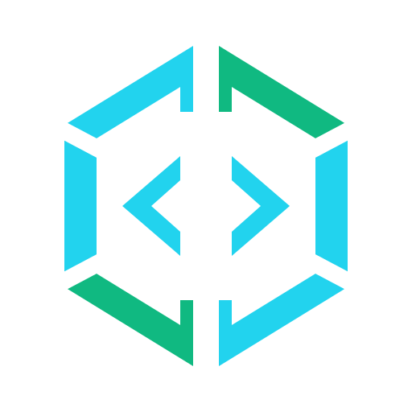

DEVELOPER TOOLING01
Roslyn Workbench MCP
Bring code-aware analysis and safe, transactional C# refactoring to MCP clients through a local Roslyn-powered server.
C# · Roslyn · MCPExplore project

Lantean CodeINDEPENDENT SOFTWARE · OPEN SOURCE
Libraries that make integration simpler. Tools that make development clearer. Applications that make complex workflows easier.
01 / WHO WE ARE
Lantean Code is a home for open-source software, with a focus on the .NET ecosystem. Our work spans reusable libraries, tools for working with code, and web interfaces for existing services.
From a fluent message builder to a complete application interface, the aim is the same: make useful capabilities easier to work with.
Explore the source02 / SELECTED WORK
Bring code-aware analysis and safe, transactional C# refactoring to MCP clients through a local Roslyn-powered server.
A fresh interface for qBittorrent. A replacement WebUI with thoughtful setup, customisation, browser integration, and diagnostics.
Hash fragment routing for Blazor WebAssembly applications. Bring hash-based navigation to your Blazor projects.
A .NET client library for the qBittorrent Web API. Connect your own applications and tools to qBittorrent.
Also in the toolbox Aria2.JsonRpcClient ↗SlackMessageBuilder ↗FlagHelper ↗
03 / GET INVOLVED
Found something useful? Try it, share an idea, report an issue, or contribute to a project on GitHub.